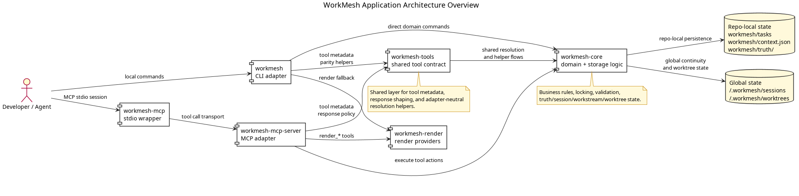
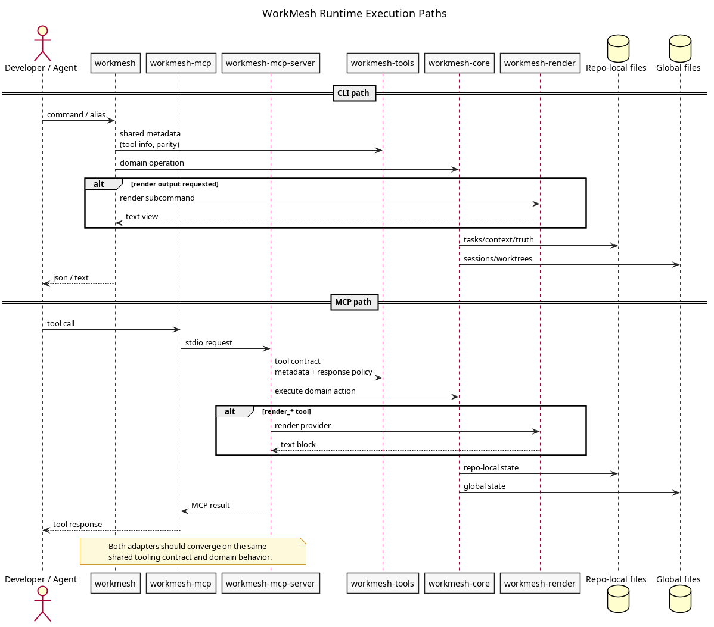
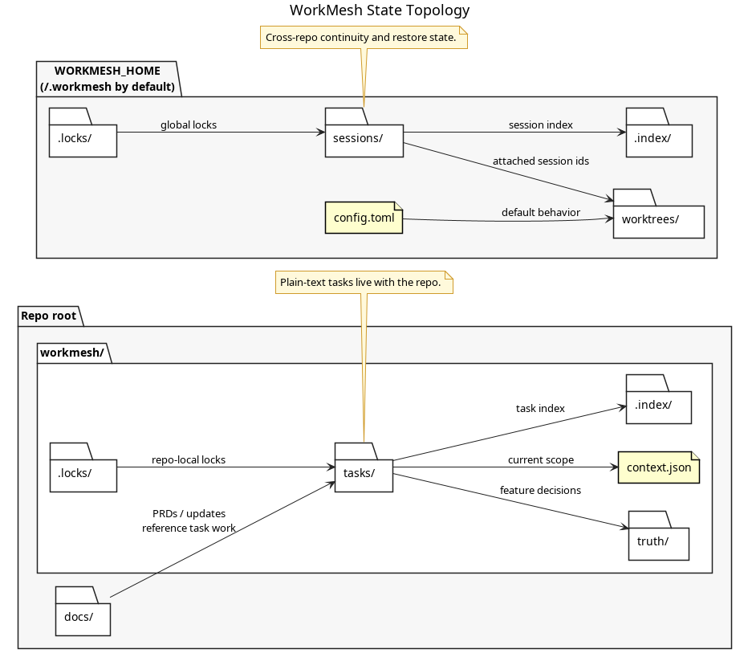

WorkMesh is the task, dependency, readiness, and approval-gate authority inside the Mesh operating context model. WorkMesh tasks and workstreams may carry organization, product, repo, worktree, Guildmesh room, AgentMesh session, ShipMesh environment/deployment, TestMesh run, VaultMesh secret-scope, and TimeMesh report references.
WorkMesh does not own room discussion, agent process execution, Git worktree lifecycle, deployment environments, preview URLs, secrets, test evidence, or time entries. It should store typed refs and gate state only.
This page documents the current WorkMesh application architecture after the shared-tooling refactor.
The goal is straightforward: a contributor should be able to understand where responsibilities live, how CLI and MCP requests flow through the system, and where WorkMesh persists state without opening the Rust source first.

What this diagram shows:
workmesh is the CLI adapter.workmesh-mcp is only the stdio wrapper.workmesh-mcp-server is the MCP adapter.workmesh-tools is the shared tool-contract layer used
by both adapters.workmesh-core owns domain logic, storage integrity, and
state mutation.workmesh-render owns human-friendly rendering.The key architectural rule is that adapters depend on the shared tooling layer and domain layer; they do not depend on each other.

What this diagram shows:
workmesh-core.
What this diagram shows:
workmesh/ in the
project.WORKMESH_HOME
(~/.workmesh by default).Use this routing rule before changing code:
workmesh-toolsworkmeshworkmesh-mcp-serverworkmesh-coreworkmesh-renderUse the local PlantUML CLI:
plantuml -tpng docs/diagrams/application-architecture-overview.puml \
docs/diagrams/application-execution-paths.puml \
docs/diagrams/application-state-topology.pumlThe rendered PNG files are the published documentation artifacts. The PlantUML files remain in the repo as the source of truth for regeneration.